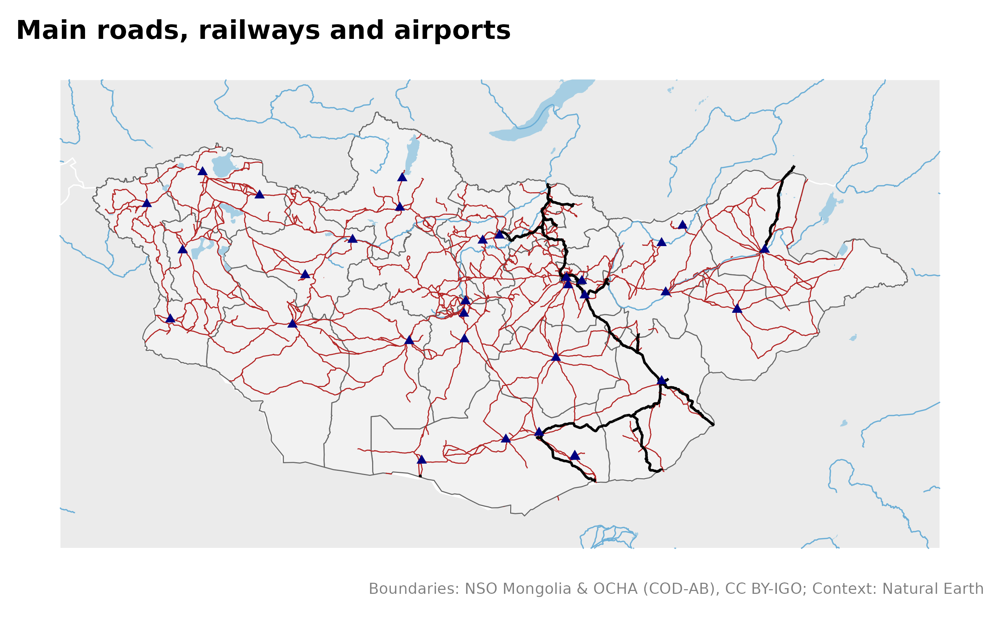
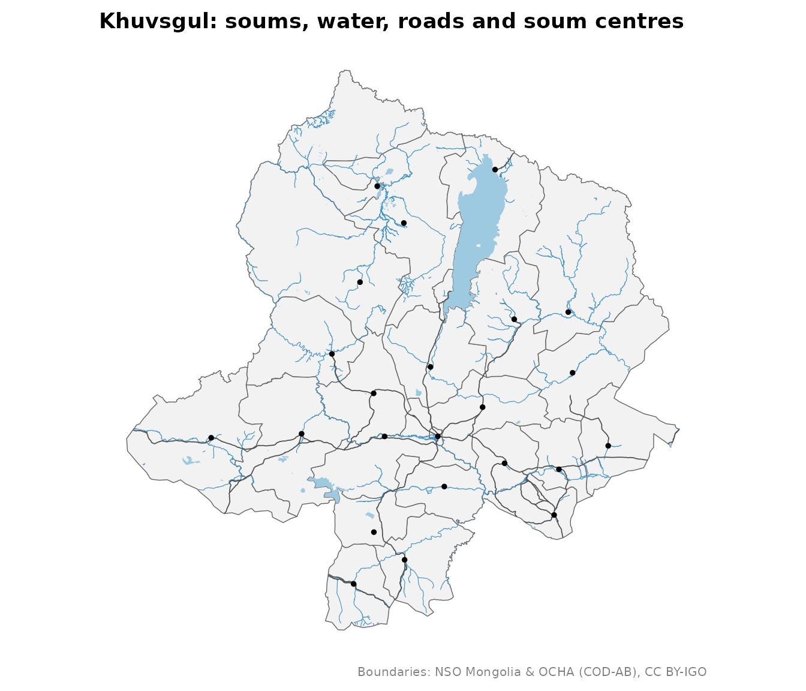
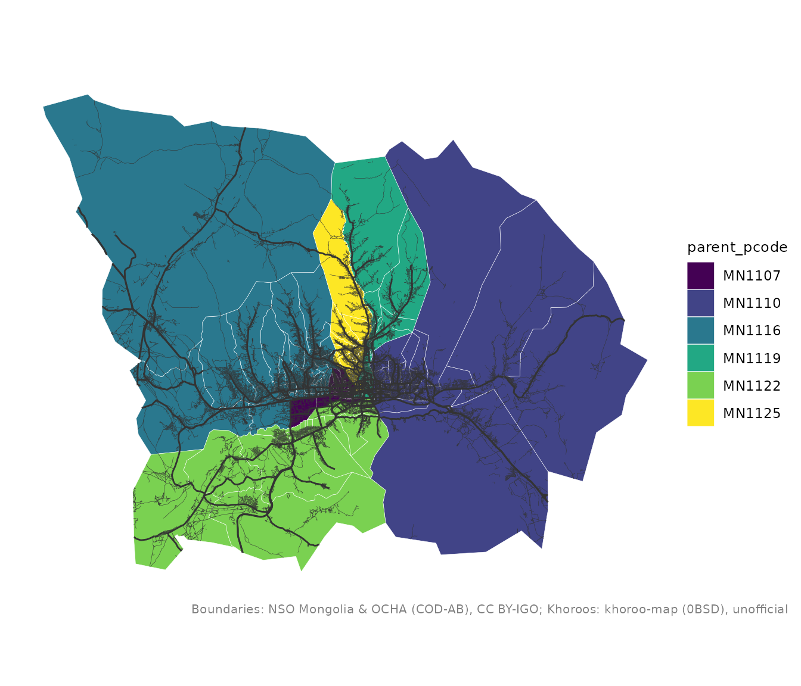

Thematic layers: roads, water, places
Source:vignettes/articles/thematic-layers.Rmd
thematic-layers.RmdBesides boundaries, mongolmaps provides the layers that make a map
readable. Small ones ship with the package; larger ones are downloaded
once and cached (see mn_cache_dir()).
| Function | What | Source | Delivery |
|---|---|---|---|
mn_settlements() |
capital, aimag and soum centres | Wikidata | bundled |
mn_neighbours() |
Russia, China, Kazakhstan around Mongolia | Natural Earth | bundled |
mn_rivers(), mn_lakes()
|
major rivers and lakes | Natural Earth | bundled |
mn_rivers("all"), mn_lakes("all")
|
every river, stream and water body | OpenStreetMap | download, ~20 MB |
mn_roads() |
roads and streets | OpenStreetMap | download, ~30 MB |
mn_railways(), mn_airports()
|
railways, stations, airports | OpenStreetMap | download, <1 MB |
mn_places() |
cities, towns, villages | OpenStreetMap | download, <1 MB |
The country
mn_map(mn_aimags(), context = TRUE) +
geom_sf(data = mn_roads(), colour = "firebrick", linewidth = 0.25) +
geom_sf(data = mn_railways(), colour = "black", linewidth = 0.6) +
geom_sf(data = mn_airports(), shape = 17, colour = "navy") +
labs(title = "Main roads, railways and airports")
One aimag
within keeps the features inside a place and cuts lines
at its border:
aimag <- "Khuvsgul"
mn_map(mn_soums(aimag = aimag)) +
geom_sf(data = mn_lakes("all", within = aimag), fill = "#9ecae1", colour = NA) +
geom_sf(data = mn_rivers("all", within = aimag), colour = "#4292c6", linewidth = 0.2) +
geom_sf(data = mn_roads(within = aimag), colour = "grey30", linewidth = 0.3) +
geom_sf(data = mn_settlements(within = aimag), size = 1) +
labs(title = "Khuvsgul: soums, water, roads and soum centres")
Ulaanbaatar streets
central <- c("BGD", "BZD", "ChD", "KhUD", "SKhD", "SBD")
streets <- mn_roads(class = c("main", "minor"), within = central)
#> Re-reading with feature count reset from 34522 to 34521
mn_map(mn_khoroos(district = central), fill = parent_pcode) +
geom_sf(data = streets, aes(linewidth = class), colour = "grey20") +
scale_linewidth_manual(values = c(main = 0.5, minor = 0.1), guide = "none")
Credits
OpenStreetMap layers are under the Open Database Licence. Credit them when you publish:
mn_citation(c("admin", "osm_roads", "osm_water"))
#> [1] "Boundaries: NSO Mongolia & OCHA (COD-AB), CC BY-IGO; Roads: (c) OpenStreetMap contributors, ODbL; Water: (c) OpenStreetMap contributors, ODbL"